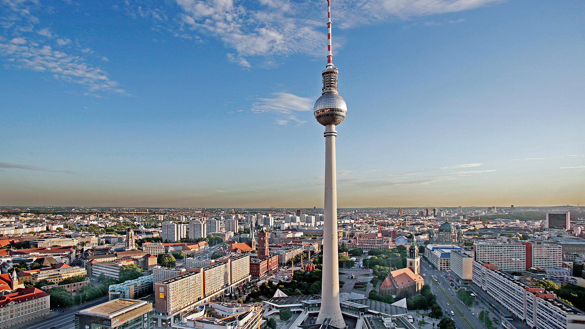

Berlin

Berlin is the capital and largest city of Germany by both area and population. Its 3.7 million inhabitants
make
it the European Union's most populous city, according to population within city limits. One of Germany's
sixteen
constituent states, Berlin is surrounded by the State of Brandenburg and contiguous with Potsdam,
Brandenburg's
capital. Berlin's urban area, which has a population of around 4.5 million, is the second most populous
urban
area in Germany after the Ruhr. The Berlin-Brandenburg capital region has around 6.2 million inhabitants and
is
Germany's third-largest metropolitan region after the Rhine-Ruhr and Rhine-Main regions.
Paris
.jpg)
Paris is the capital and most populous city of France, with an official estimated population of 2,102,650
residents as of 1 January 2023 in an area of more than 105 km² (41 sq mi), making it the fourth-most
populated
city in the European Union as well as the 30th most densely populated city in the world in 2022. Since the
17th
century, Paris has been one of the world's major centres of finance, diplomacy, commerce, fashion,
gastronomy,
and science. For its leading role in the arts and sciences, as well as its early and extensive system of
street
lighting, in the 19th century, it became known as "the City of Light". Like London, prior to the Second
World
War, it was also sometimes called the capital of the world.
Rome
Rome is the capital city of Italy. It is also the capital of the Lazio region, the centre of the Metropolitan
City of Rome, and a special comune named Comune di Roma Capitale. With 2,860,009 residents in 1,285 km2
(496.1 sq mi), Rome is the country's most populated comune and the third most populous city in the European
Union by population within city limits. The Metropolitan City of Rome, with a population of 4,355,725
residents, is the most populous metropolitan city in Italy. Its metropolitan area is the third-most populous
within Italy. Rome is located in the central-western portion of the Italian Peninsula, within Lazio
(Latium), along the shores of the Tiber. Vatican City (the smallest country in the world) is an independent
country inside the city boundaries of Rome, the only existing example of a country within a city. Rome is
often referred to as the City of Seven Hills due to its geographic location, and also as the "Eternal City".
Rome is generally considered to be the "cradle of Western civilization and Christian culture", and the
centre of the Catholic Church.